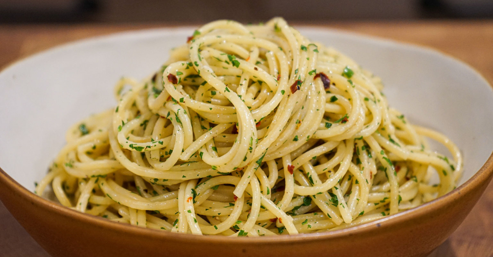

Spaghetti

How to make spaghetti with garlic and olive oil
Spaghetti with garlic and olive oil, also known as Aglio e Olio, is a traditional Italian dish made with spaghetti, garlic, olive oil, and red pepper flakes. It’s a quick and easy recipe that’s both comforting and satisfying.
Ingredients
For the Meat Sauce:
- Spaghetti
- Olive oil
- Garlic cloves
- Red pepper flakes
- Fresh parsley
- Grated Parmesan (optional)
- Salt
Steps
- Cook the spaghetti in salted boiling water until al dente.
- Heat olive oil in a pan, then sauté minced garlic until fragrant.
- Add red pepper flakes and stir briefly.
- Toss the cooked spaghetti into the pan, mixing well to coat.
- Garnish with parsley and Parmesan before serving.